앵커 스틸 · 13장
A01 모형 지구본 — 작업대 직치, 링 상단 위성A02 고궤도·한반도 — 지구본 + 구름만, 항공기 없음 (rev.3)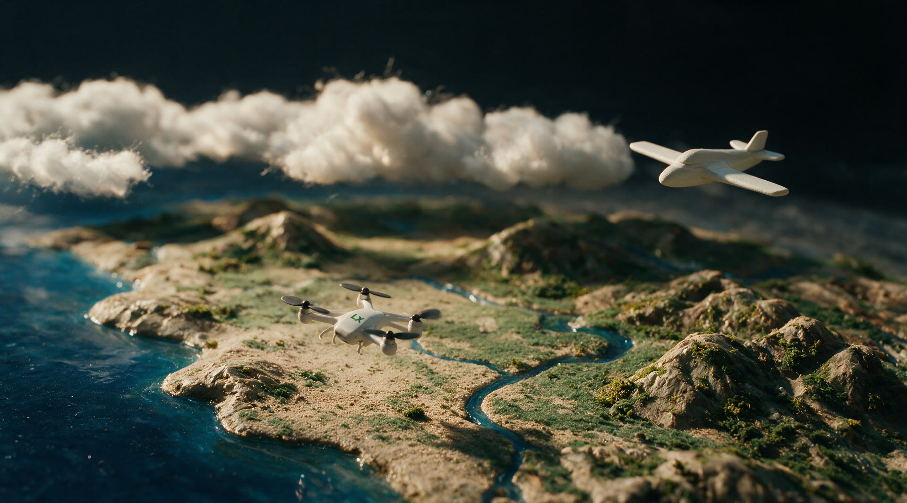
A03 구름 천장 — 드론 하단 1/3 공중 부양·소, 항공기 우상단 (rev.3c, 1회 재생성)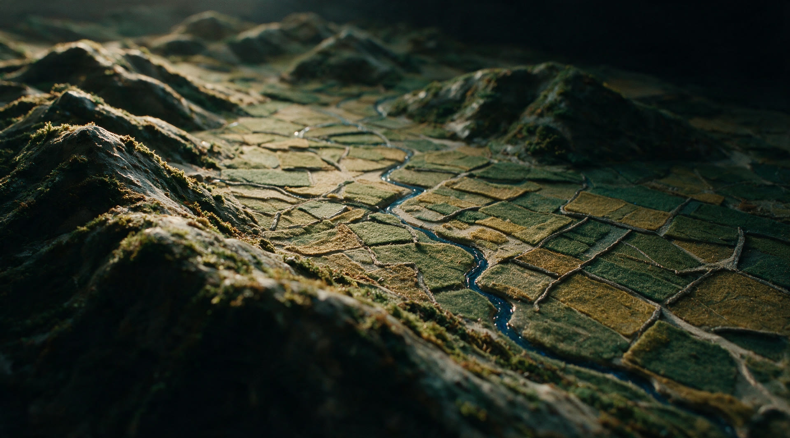
A04 능선 너머 남원 분지 — 소품 0 (rev.3)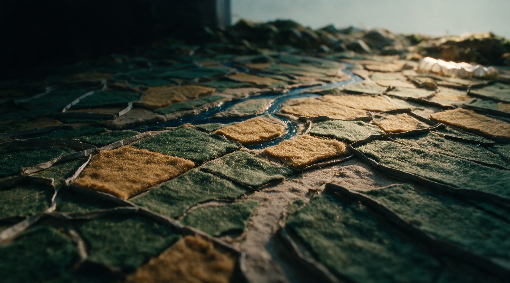
A05 남원 평야·농지이용 — 프롭 0, 회색 판 제거 (rev.3d, 1회 리롤 · 좌측 도로 환각)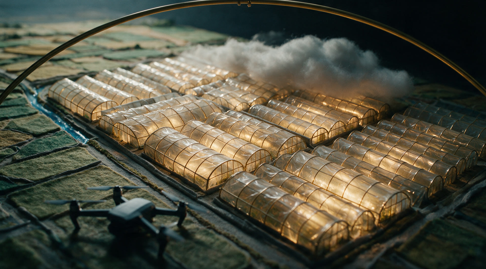
A06 금지면 비닐하우스 — 프롭 0, 구름·좌측 구조물 제거 (rev.3e, 1회 리롤)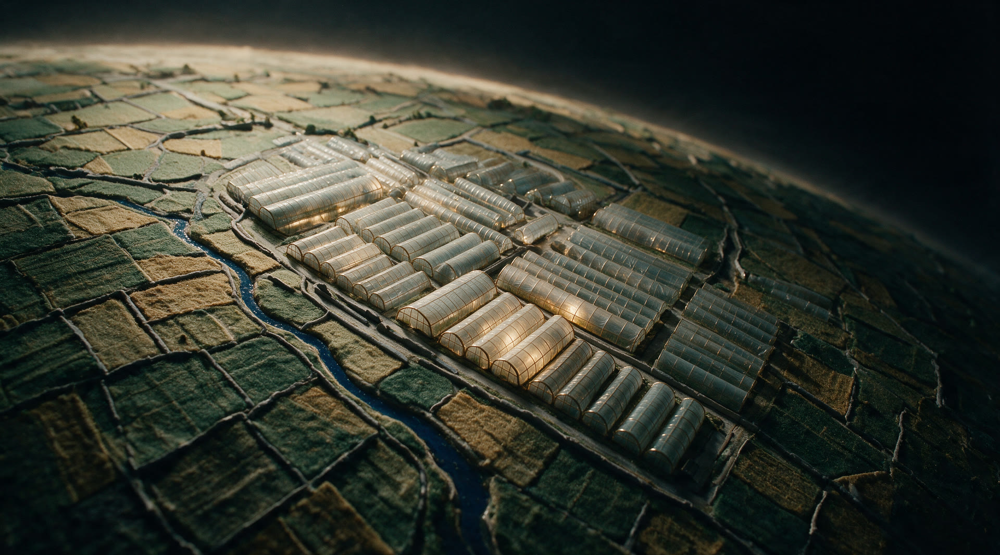
A06b 남원 상공 고고도 — 같은 온실 군락이 중앙-좌에 그대로, 카메라만 상승·곡률·헤이즈 (rev.3f, 1회 리롤)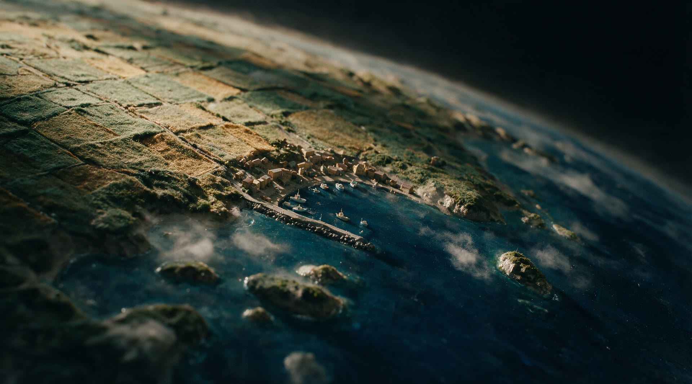
A07 지구본 이동→여수 — 농지가 해안까지 완만히 내려와 마을과 같은 높이, 고원·절벽 없음 (rev.3e, 1회 리롤)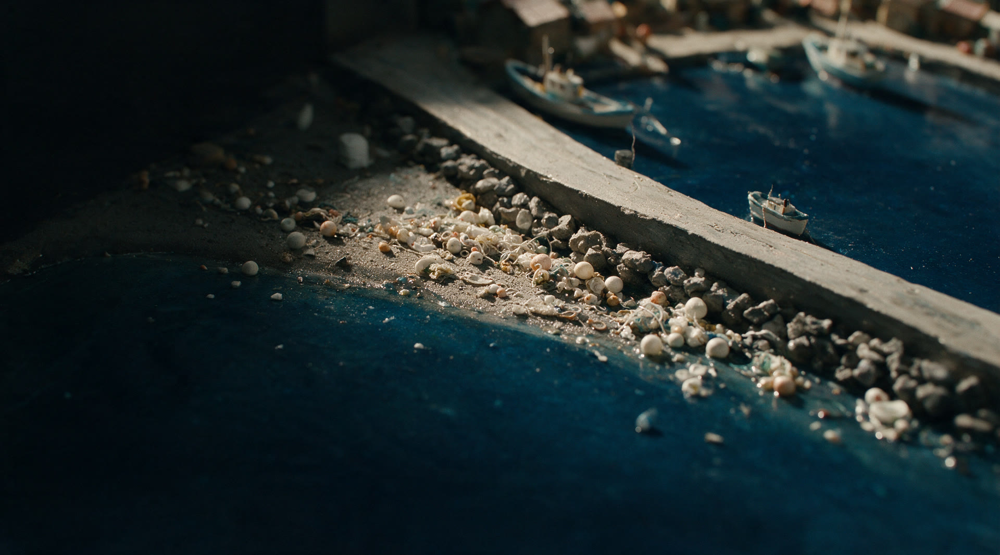
A08 여수 국동항·해양쓰레기 — 방파제 발치 해안선 클로즈업, 조간대 스티로폼·부표·그물 다량 (rev.3f, 1회 리롤)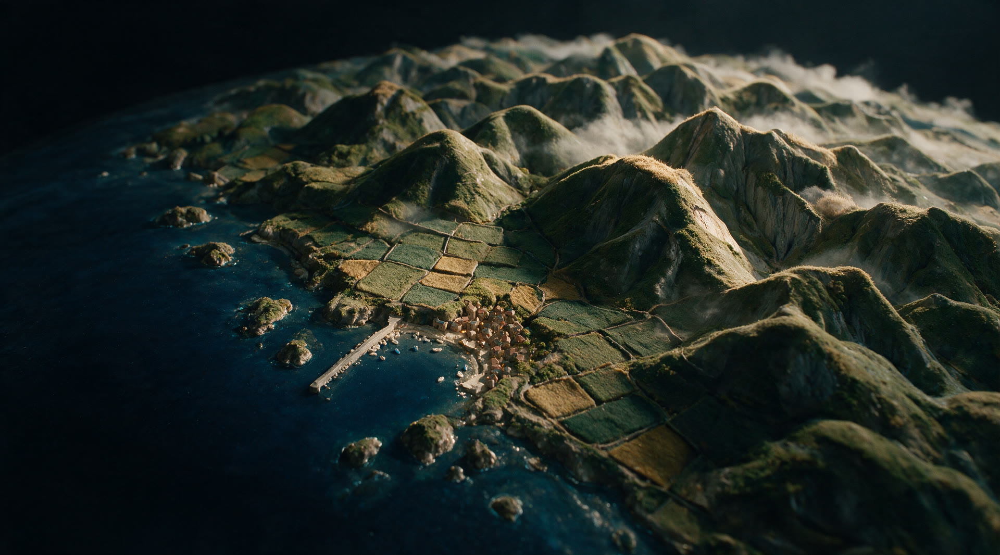
A09 지구본 이동→울주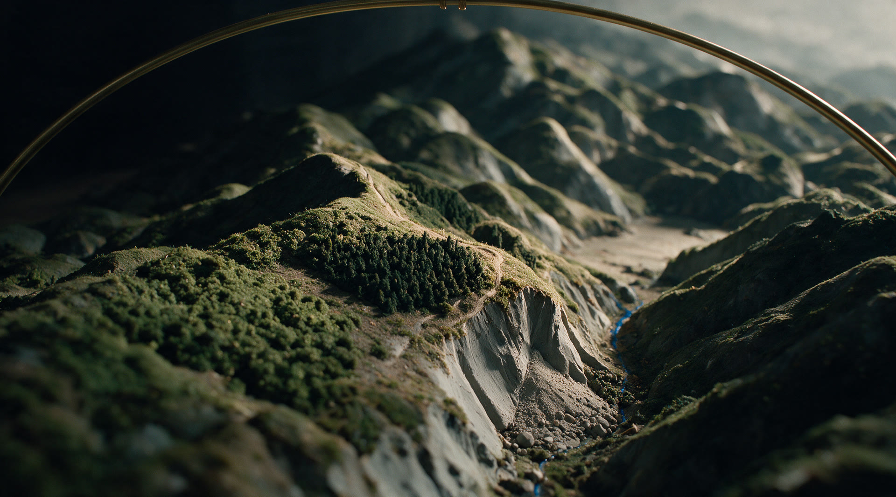
A10 산림식생·급경사지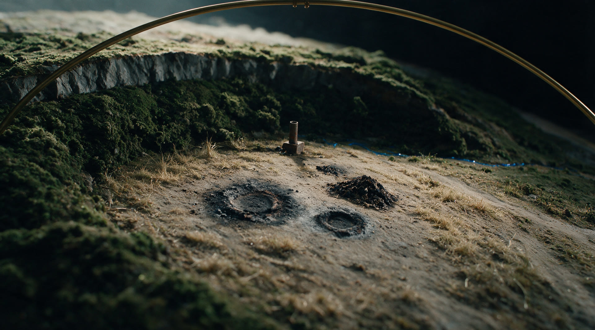
A11 불법소각 — 산자락 소면적 공터, 연소 중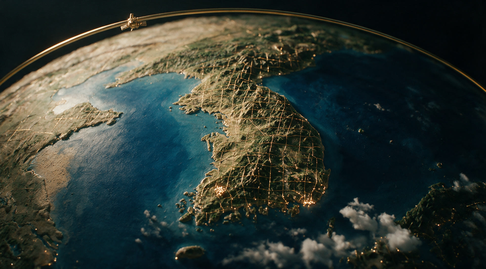
A12 국토 변화(데이터 관점) — 황동 격자·측정 셀 점등, 링·위성 복귀